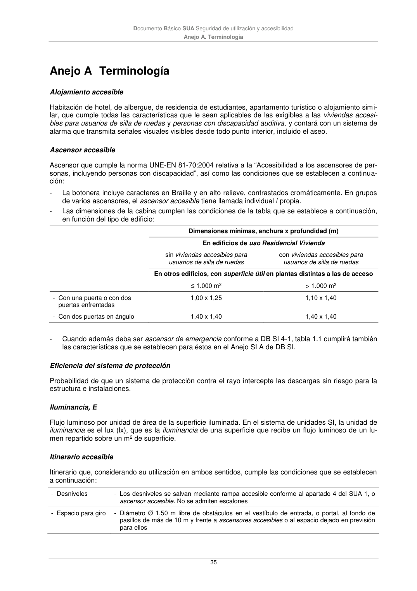

DB-SUA Seguridad de utilización y accesibilidad · edición 2022-06-14 · capa oficial
Documento DB-SUA-oficial · SHA-256 del PDF 3cfb5bbb135e8f02faebd8b844e03e8947994c18d4c9e675a7d2aa37d1cd5958
Página física 35 de 47.
Copia fiel del PDF fuente · Fuente oficial
Ficha de la disposición en la fuente oficial
Formato: Texto de la página (Markdown)
Documento Básico SUA Seguridad de utilización y accesibilidad Anejo A. Terminología 35 Anejo A Terminología Alojamiento accesible Habitación de hotel, de albergue, de residencia de estudiantes, apartamento turístico o alojamiento simi- lar, que cumple todas las características que le sean aplicables de las exigibles a las viviendas accesi- bles para usuarios de silla de ruedas y personas con discapacidad auditiva, y contará con un sistema de alarma que transmita señales visuales visibles desde todo punto interior, incluido el aseo. Ascensor accesible Ascensor que cumple la norma UNE-EN 81-70:2004 relativa a la “Accesibilidad a los ascensores de per- sonas, incluyendo personas con discapacidad”, así como las condiciones que se establecen a continua- ción: - La botonera incluye caracteres en Braille y en alto relieve, contrastados cromáticamente. En grupos de varios ascensores, el ascensor accesible tiene llamada individual / propia. - Las dimensiones de la cabina cumplen las condiciones de la tabla que se establece a continuación, en función del tipo de edificio: Dimensiones mínimas, anchura x profundidad (m) En edificios de uso Residencial Vivienda sin viviendas accesibles para usuarios de silla de ruedas con viviendas accesibles para usuarios de silla de ruedas En otros edificios, con superficie útil en plantas distintas a las de acceso ≤ 1.000 m2 > 1.000 m2 - Con una puerta o con dos puertas enfrentadas 1,00 x 1,25 1,10 x 1,40 - Con dos puertas en ángulo 1,40 x 1,40 1,40 x 1,40 - Cuando además deba ser ascensor de emergencia conforme a DB SI 4-1, tabla 1.1 cumplirá también las características que se establecen para éstos en el Anejo SI A de DB SI. Eficiencia del sistema de protección Probabilidad de que un sistema de protección contra el rayo intercepte las descargas sin riesgo para la estructura e instalaciones. Iluminancia, E Flujo luminoso por unidad de área de la superficie iluminada. En el sistema de unidades SI, la unidad de iluminancia es el lux (lx), que es la iluminancia de una superficie que recibe un flujo luminoso de un lu- men repartido sobre un m2 de superficie. Itinerario accesible Itinerario que, considerando su utilización en ambos sentidos, cumple las condiciones que se establecen a continuación: - Desniveles - Los desniveles se salvan mediante rampa accesible conforme al apartado 4 del SUA 1, o ascensor accesible. No se admiten escalones - Espacio para giro - Diámetro Ø 1,50 m libre de obstáculos en el vestíbulo de entrada, o portal, al fondo de pasillos de más de 10 m y frente a ascensores accesibles o al espacio dejado en previsión para ellos
